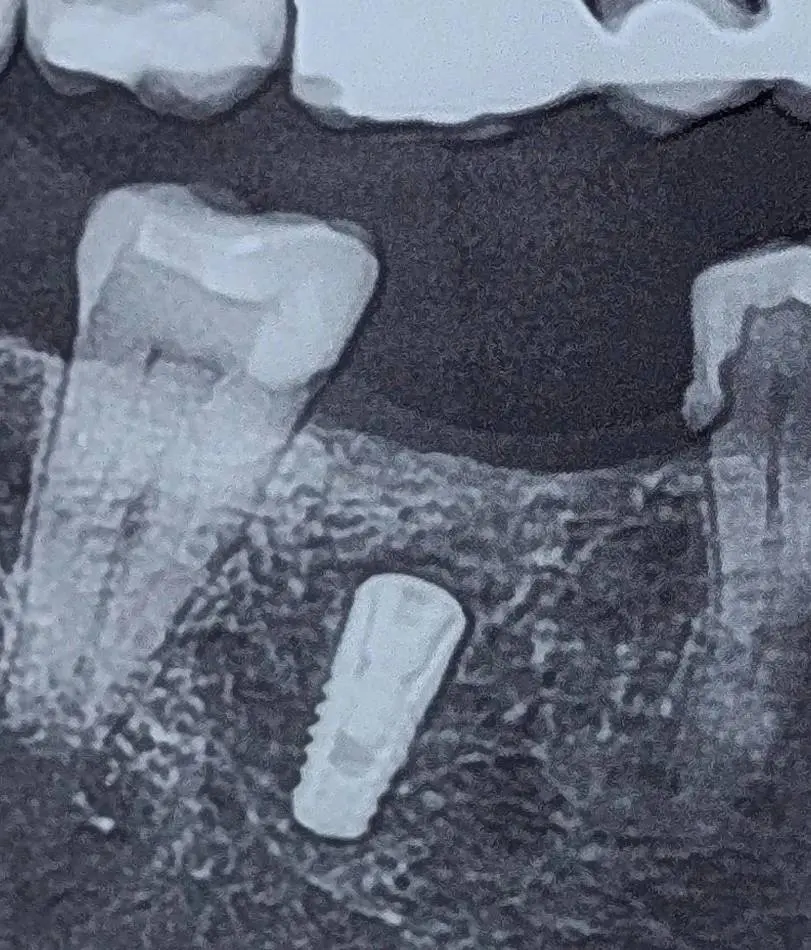

نسخه استخراجشده؛ ترجمه یا تأیید علمی انجام نشده است. وضعیت: captured
بیمار برای ویزیت پس از جراحی فیکسچر و بررسی ادامهی درمان پروتز ایمپلنت آمده است. ایمپلنت در ساکت دندان کشیدهشده و به صورت fresh socket قرار داده شده؛ اینتگریشن صورت گرفته و در نگاه اول شرایط قابل قبول به نظر میرسد. اما موقعیت آن چند میلیمتر پایینتر از سطح استخوان است.

سؤال اصلی: آیا قرارگیری ایمپلنت در استخوان، بهتنهایی برای ورود به فاز پروتز کافی است؟
عمق بیش از حد ایمپلنت باعث شده پلتفرم در موقعیتی بسیار اپیکال قرار بگیرد، و همین در فاز پروتز چالشهای متعددی میسازد. مراحل پایهای پروتزی بهمراتب دشوارتر میشوند: قرار دادن، خارج کردن و بستن ایمپرشن کوپینگ یا اسکنبادی در چنین عمقی با محدودیت دید و دسترسی همراه است.
این محدودیت میتواند دقت ثبت موقعیت ایمپلنت را تحت تأثیر قرار دهد و در نهایت به عدم تطابق پروتز منجر شود.
در بسیاری از موارد نتیجهی یک تصمیم آگاهانه نیست؛ ناشی از هدایت ناخودآگاه ایمپلنت به داخل فضای خالی ساکت است، جایی که آناتومی گذشته جایگزین برنامهریزی پروتزی آینده میشود.
در این کیس با توجه به مجموعهی این ملاحظات، ورود به فاز پروتز برای این ایمپلنت پذیرفته نشد؛ نه بهدلیل شکست جراحی، بلکه بهدلیل عدم تطابق موقعیت ایمپلنت با الزامات پروتزی.
قرارگیری صحیح ایمپلنت صرفاً به معنای قرار گرفتن در استخوان نیست؛ به معنای قرار گرفتن در موقعیتی است که بتواند یک پروتز قابل پیشبینی، قابل نگهداری و بیومکانیکی پایدار را پشتیبانی کند. گاهی مشکل در چیزی است که در مرحلهی پروتز خود را نشان خواهد داد.
نوع سؤال: ساخت کلمه · 4 خانه
حروف منبع: ا · ک · س · ت